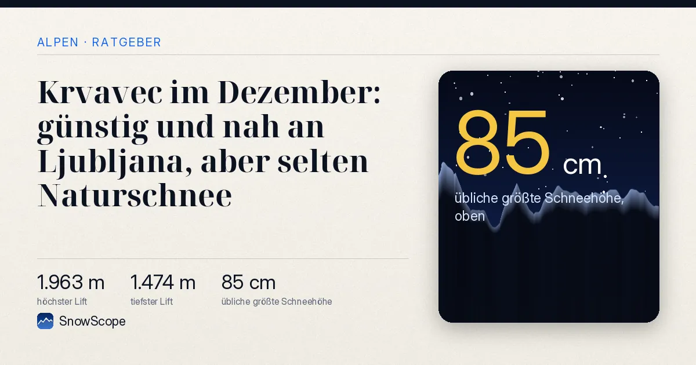

Krvavec im Dezember: günstig und nah an Ljubljana, aber selten Naturschnee
Den Krvavec erreicht man aus Ljubljana vor dem Frühstück, und seine Preise gehören zu den niedrigsten dieser Serie: 47 EUR für die Tageskarte, 205 EUR für 6 Tage. Schwierig ist die Schneehistorie. An einem typischen 15. Dezember liegen an der Mittelstation (1718 m) in unseren 46 Wintern 13 cm, und in 11 dieser Winter war der Boden an diesem Tag aper.
Die Live-Schneeprognose für Krvavec in der SnowScope-AppSchneehöhen, Pulverschnee-Alarme und 3D-Karte, gratis.
Was man über den Dezember hier sagt
Die gängige Meinung: Mit Liften bis 1963 m ist der Krvavec hoch genug für einen frühen Start. Für Slowenien ist er hoch, und das kartierte Gebiet kann sich sehen lassen: 16 km Pisten und 13 Lifte. Aber Schnee, der fällt, ist nicht Schnee, der liegen bleibt – und am sonnigen Südrand der Alpen verliert der Dezember oft, was der November gebracht hat.


Was 46 Winter wirklich zeigen
In der Woche vom 15. bis 21. Dezember hatten nur 24 % unserer Winter an der Mittelstation mindestens 30 cm, am Gipfel 28 %. In der Weihnachtswoche sind es 28 % und 33 %. Der übliche erste Tag mit 30 cm an der Mittelstation ist der 7. Januar.
Schlimmer noch: Der Trend ist steil. Das Dezembermittel an der Mittelstation fiel von 15 cm in den ersten 15 Wintern auf 4 cm in den letzten 15. In der Weihnachtswoche hatten 47 % der frühen Winter dort 30 cm, aber nur 13 % der jüngeren. Im letzten Winter lag am 15. Dezember überhaupt kein Naturschnee.
Der günstige Teil
Laut offizieller Preisliste 2026-27 kostet die Tageskarte für Erwachsene 47 EUR und der 6-Tage-Skipass 205 EUR, im Vorverkauf gibt es die Tageskarte für 45 EUR. Das liegt weit unter den österreichischen Gletschern. Wenn die Pisten präpariert sind, ist ein Dezembertag hier sehr preiswert – die Schneehistorie sagt nur, dass Naturschnee das im Dezember in vielen Wintern nicht allein schafft.
Wo der Mölltaler Gletscher ins Spiel kommt
Für eine sichere Dezemberwoche ist die nächste hohe Option auf unserer Liste der Mölltaler Gletscher in Kärnten: 66 cm am tiefsten Lift auf 2103 m an einem typischen 15. Dezember und 91 % der Winter mit 30 cm in der Woche vom 15. bis 21. Dezember. Er kostet mehr: 332 EUR für 6 Tage in der Nebensaison laut zuletzt veröffentlichter Liste (2025-26).
Ein vernünftiger Plan für Skifahrer aus Slowenien: Krvavec für kurze Tage, wenn der eigene Schneebericht gut ist, der Gletscher für die geplante Woche.
Das Kleingedruckte
Unsere Zahlen beschreiben Naturschnee am Boden auf den Höhen des Skigebiets; sie sagen nichts darüber, was das Skigebiet auf seinen Pisten präpariert. Bevor du hier einen Dezemberskipass kaufst, schau in den aktuellen Schnee- und Pistenbericht des Skigebiets – und betrachte eine Buchung Monate im Voraus als Wette.
Tipps für Skifahrer
- Am Tag selbst den Pistenbericht prüfen: Naturschnee allein brachte an der Mittelstation bis Mitte Dezember nur in 24 % unserer Winter 30 cm.
- Im Dezember lieber Tageskarten als einen 6-Tage-Skipass kaufen, außer der Bericht zeigt eine gute Unterlage.
- Für eine fixe Woche vor Weihnachten höher gehen: Der Mölltaler Gletscher ist die schneesichere Option in der Nähe.
- Abseits der Piste nach einem seltenen Sturm: zuerst den slowenischen Lawinenbericht lesen.
Weitere Karten (externe Seiten)
Quellen und Nachweise
- Krvavec: official lift-pass prices (2026-27), checked 13 November 2026 rtc-krvavec.si/cenik-urnik
- Mölltaler Gletscher: official lift-pass prices (2025-26), checked 13 November 2026 www.moelltaler-gletscher.at/en/price-list/winter/moelltaler-gletscher
Zu diesen Zahlen
Schneewerte: SnowScope-Schneehistorie, 46 vergangene Winter (1980-81 bis 2025-26) auf den Höhen des Skigebiets, höhenkorrigiert (eine Schätzung für eine Fläche, keine Meldungen des Skigebiets); „guter Schnee“ = im Wochenmittel 30 cm oder mehr am Boden. Karte: unsere übliche Schneehöhe am 15. Dezember, nach Höhe auf das Gelände verteilt. Pisten und Lifte: OpenSkiMap-Kartierung. Skipasspreise: offizielle Preislisten der Skigebiete, geprüft am 13. November 2026; Preise können sich ändern.
Offizielle Lawinenlageberichte: ARSO – Slovenian Environment Agency
Diesen Bericht zitieren
Für Forschung, Lehre oder Presse: Zahlen und Grafiken sind unter CC BY 4.0 mit dieser Quellenangabe frei nutzbar.
SnowScope (2026), Krvavec im Dezember: günstig und nah an Ljubljana, aber selten Naturschnee, https://snowscope.app/blog/de/2026/11/krvavec-december-skiing-ljubljana-honest-snow.html, abgerufen am 2026-11-14
SnowScope (Atlas Labs). (2026, November 14). Krvavec im Dezember: günstig und nah an Ljubljana, aber selten Naturschnee. SnowScope snow reports. https://snowscope.app/blog/de/2026/11/krvavec-december-skiing-ljubljana-honest-snow.html
BibTeX
@misc{snowscope2026krvavecdecemberskiinglju,
author = {{SnowScope (Atlas Labs)}},
title = {Krvavec im Dezember: günstig und nah an Ljubljana, aber selten Naturschnee},
year = {2026},
month = nov,
howpublished = {\url{https://snowscope.app/blog/de/2026/11/krvavec-december-skiing-ljubljana-honest-snow.html}},
note = {Published 2026-11-14 20:54 UTC; accessed 2026-11-14}
}· CC BY 4.0 · Methoden, Daten und Werkzeuge →
Krvavec: Schnee und Temperatur nach Höhe, dieser Winter vs letzter (Werkzeuge) →
Krvavec folgen
Gratis: eine Nachricht, wenn Neuschnee kommt, und jeden Morgen die Vorhersage.